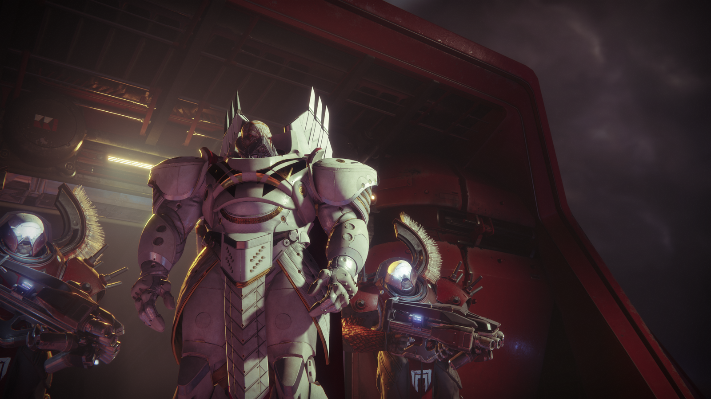
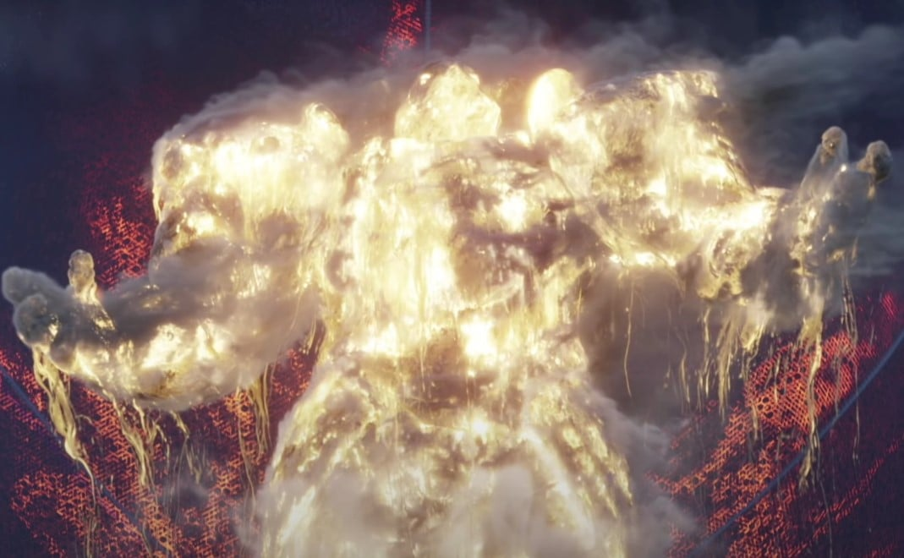

Příběh našeho Strážce začíná v posledním městě na Zemi, v hlavní základně vůdců lidstva; mohutné věži tyčící se nad městem. Vše se zdá v pořádku, dokud se z našich nebes zničehonic vynoří masivní flotila lodí impéria Cabal, konkrétně vojenská armáda pod názvem Rudý Legion, pod velením jednoho vůdce - Dominus Ghaul. Útok na město je nečekaný, a bleskově rychlý; tak nečekaný, že není žádný čas na protiofenzivu. Legion rychle postupuje k srdci posledního města - parakauzální entita známa jako Traveler, která dosud dodávala Strážcům jejich schopnosti - síly Světla. Uprostřed flotily se nacházela loď odlišná od ostatních, a brzy jsme se dovědeli o jejím účelu - kompaktní klec, navržená pro uzavření Travelera, což znamená přerušení sil Světla a nesmrtelnost Strážců za pomoci jejich Ghostů - zrodů Travelera umožňující oživení. Po úspěšném uvěznění Travelera bylo mnoha Strážců povražděno Rudým Legionem, a centrální velitelská skupina Vanguard se rozutekla po celé Sluneční soustavě. Po přímé konfrontaci se samotným Ghaulem se našemu Strážcovi podařilo Legionu uprchnout, do části dřívější Evropy známou jako EDZ (European Dead Zone). Na naší cestě jsme spatřili mnoho surově zabitých Strážců, až jsme se spolu s naším nereagujícím Ghostem dostali na místo nyní známým jako The Farm. Stará farma byla místem pro uprchlíky z města, a byla vedena ženou známou pod jménem Suraya Hawthorne. Důvod, proč farma byla tak důležitá byl jeden - nedaleko od ní ležel v zemi zapíchnutý úlomek Travelera, z doby dlouho před invazí Rudého Legionu. Tam se našemu Strážcovi podařilo oživit svého Ghosta, a znovu získat schopnost používat síly Světla.


Důvod pro invazi Rudého Legionu byl jednoduchý: Ghaul chtěl síly Světla pro sebe a svoji armádu. Také měl ve svém arzenálu jinou zbraň - masivní vesmírnou loď známou jako The Almighty, jejíž cíl byl vyčerpání našeho Slunce, tudíž způsobení reakce supernovy. O existenci této lodi bychom se ale ještě dlouho nedozvěděli. V průběhu tří měsíců a nespočet operací napříč několika planetami a měsíci, jako například Mars, Titan či Io, se našemu Strážci podařilo shromáždit a sjednotit skupinu Vanguard a zahájit protiofenzivu proti Ghaulovi a jeho Rudému Legionu. Postupně jsme odvraceli hrozbu za hrozbou, dokonce i samotnou supernovu našeho slunce, díky infiltraci lodě Almighty a úspěšné permanentní deaktivaci její schopnosti vysávat naše Slunce. Nakonec jsme se dostali i zpět na Zemi, blíže k Travelerovi než kdy dříve, a přímo confrontovali Ghaulovy nejelitnější vojska, až i Ghaula samotného. Po jeho porážce se pokusil o poslední možnost využít sílu Světla pro sebe - sloučit se se Světlem samotným. Vypadalo to, že Ghaul doopravdy získal sílu Travelera pro sebe. V ten okamžik se ale entita probudila, a v pouhém okamžiku roztříštila klec, v které byla tak dlouho obklopována, a s ní i Ghaula samotného. Ghaulova definitivní smrt značí konec Rudé Války, ne však konec Rudého Legionu. Armáda nadále působila v Sluneční soustavě, nyní bez vůdce. Prázdnotu, kterou Ghaulova smrt zanechala, brzy vyplnil sebejistý, avšak oproti Ghaulovi mnohem méně zdatný Cabal znám jako Val Ca'uor, který byl nedlouho poté, co neoficiálně ustanovil svojí pozici jako de facto vůdce Rudého Legionu, poražen a zabit týmem Strážců s naším hrdinou v čele.